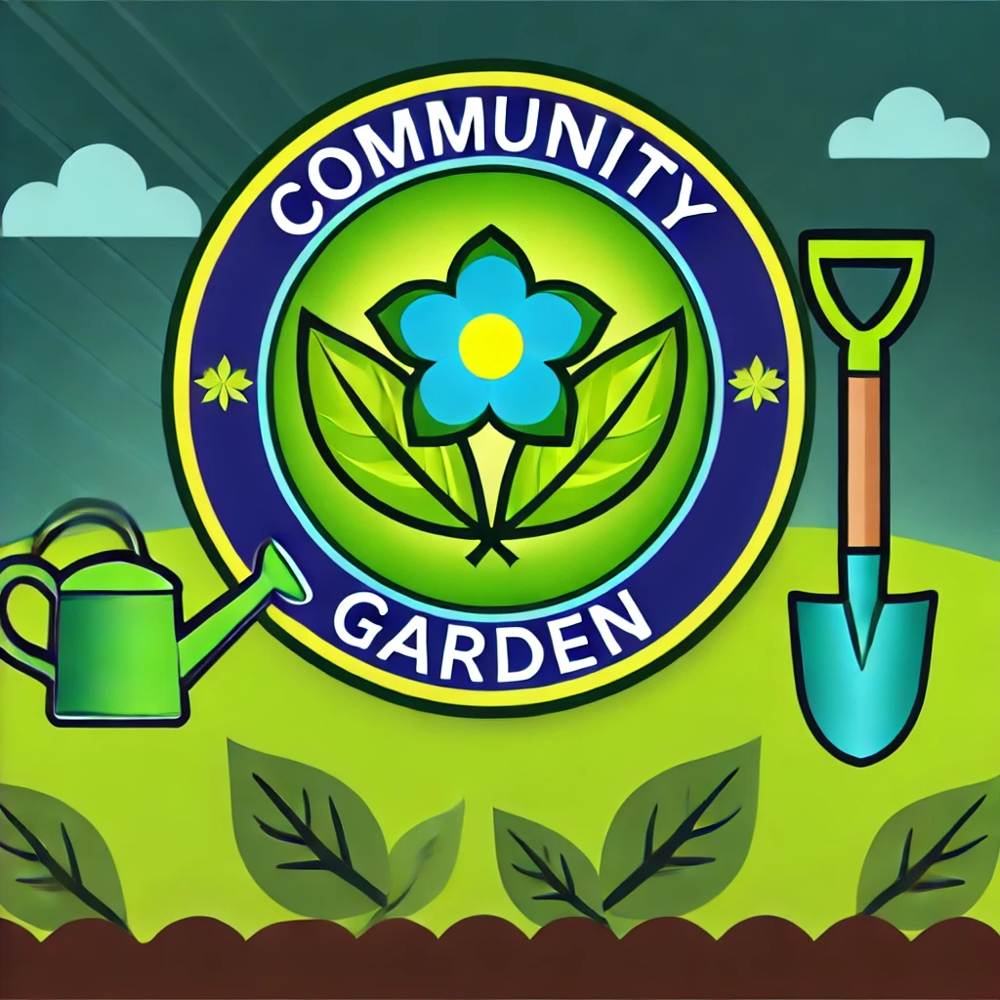

Community Garden Volunteer Program
GreenThumb Initiative
Event Overview
November 15, 2024
9:00 AM - 3:00 PM
Central City Park, 123 Main Street, Townsville
Activities Involved
Planting Flowers
Mulching
Weeding
Description
Join us for a day of community gardening to help beautify Central City Park. Volunteers will assist with planting flowers, mulching, and maintaining the park's garden beds. This event is open to all ages and is a great way to meet others who share a love for gardening.
No prior gardening experience is required—just a willingness to learn and a positive attitude. All tools and materials will be provided on-site.
Requirements
Volunteers must be at least 12 years old.
Must wear closed-toe shoes and comfortable outdoor clothing.
Bring a water bottle and snacks.